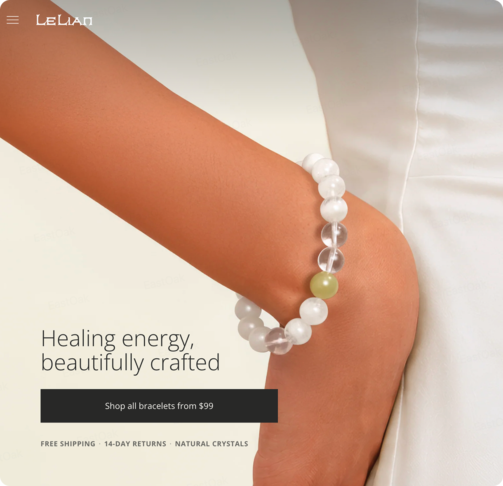
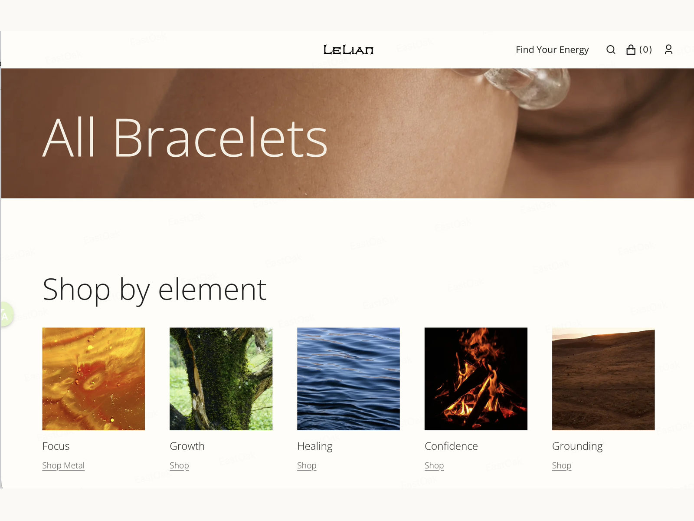
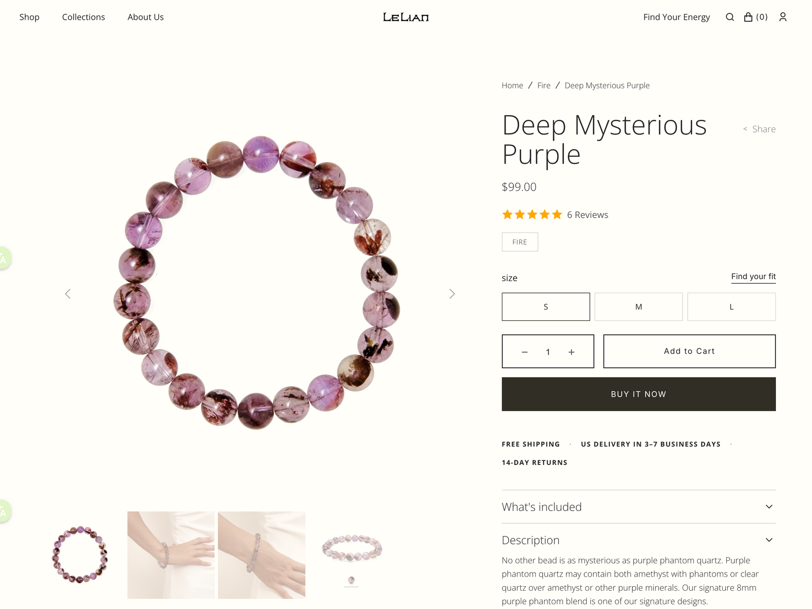
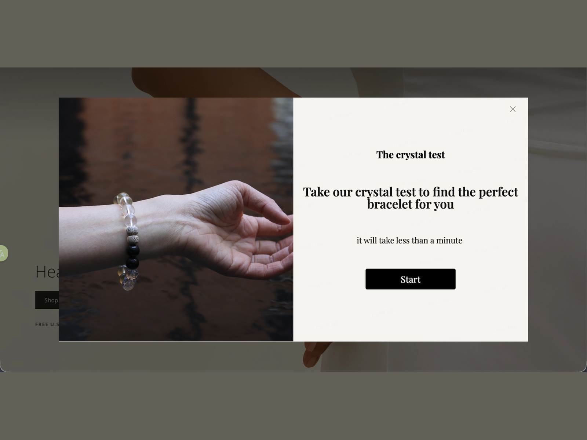

PROBLEM
品牌有体系，但用户不知道怎么选
48 款商品同时出现，差异不容易理解；网站缺少从需求到商品的购买入口。
COMMERCE UX · DESIGN TO CODE
我重新组织商品，建立多种消费者熟悉的购物入口，完成 Homepage、Collection 与 PDP，并用 Codex 把设计开发为可运营的 Shopify 商店。

PROJECT OVERVIEW
[SOLO BUILD]
COMMERCE UX · DESIGN TO CODE
FROM BRAND LANGUAGE TO USER LANGUAGE
原有商品按金、木、水、火、土理解，但消费者通常不会先学习五行再购买。
PROBLEM
48 款商品同时出现，差异不容易理解；网站缺少从需求到商品的购买入口。
GOAL
保留五行体系，同时增加能量、场景、颜色材质、生肖、时刻和礼赠等选择方式。
THREE DESIGN DECISIONS
01 · TAXONOMY
为每个商品补充统一标签，让同一商品可以被多个入口找到。
02 · SHOPPING ENTRIES
Shop by Energy、Moment、Color & Stone、Zodiac、WuXing 与 Gifts。
03 · DESIGN TO CODE
Codex 生成并调整前端代码，我负责商品逻辑、页面结构、视觉判断与 QA。
01 · INFORMATION ARCHITECTURE
我把 48 款商品整理成六个统一维度。后台标签驱动 Collection 规则，前台再把同一套数据转成导航、Quiz、Collection 与 PDP；后续上新只需补充商品信息，不用重做页面。
将抽象的品牌含义拆解为商品、页面和运营可以共同使用的分类维度。
五行 · Focus / Growth
专注 · 疗愈 · 自信
工作 · 晨间 · 旅行
生肖组合
颜色与视觉材质
水晶与材料
商品数据不再停留在后台，而是直接形成消费者能够理解和使用的购买路径。
为每款产品定义 Element、Energy、Moment、Zodiac、Color 与 Material 标签。
用标准 Tags 驱动 Smart Collections，并用 Metafields 管理推荐与产品故事。
把分类规则连接到导航、Quiz、Collection 与 PDP，支持发现、比较和购买。
运营可以新增商品、替换图片与更新内容，不需要重新设计或修改代码。
AI-ASSISTED CONTENT DIRECTION
我先按日常佩戴、户外活动、城市出行和产品近景定义场景，再用 AI 快速生成素材；最终由我判断产品是否清楚、人物是否自然，以及画面能否进入首页和营销内容。
不是随意生成模特图，而是围绕目标用户、使用时刻和商品颜色建立可复用的内容方向。
保持构图一致，只改变肤色、光线和手串能量色，让 AI 生成结果真正进入页面系统，而不是停留在概念图。
02 · DESIGN TO SHOPIFY
商品分类与导航逻辑已经在前一步确定；这里重点展示 Figma 如何进入响应式开发、逐屏 QA 和 Shopify 上线。
作为 Designer，我负责页面逻辑、组件规则、断点表现与质量判断；Codex 帮助生成和调整 HTML/CSS，我逐屏检查并修正，最后配置到 Shopify。
定义页面结构、组件和断点规则
生成并调整 HTML、CSS 与响应式逻辑
逐屏检查修复，配置商品和内容后上线
把设计判断转成清晰的开发要求，借助 Codex 完成响应式实现，并对最终体验负责。
从真实对话中整理设计要求与开发交付，让页面逻辑、实现结果与运营交接一目了然。
MY INPUT
设计一个以文字导航为核心的 Collection 模板，让用户从总分类进入对应的小类商品。
我负责定义商品分类、信息层级与用户路径。
CODEX DELIVERY
已建立 4 个总分类页面模板，并推送到当时的线上主题。
开发记录：5 个文件修改，新增 902 行。
Energy · Color · Moment · Zodiac
真实开发记录
页面与入口已验证
Desktop · Tablet · Mobile
我先给出商品逻辑与设计标准，借助 AI 快速生成可浏览方案，再比较信息层级、品牌表达和购买入口，逐轮收敛到可开发方向。
先验证能量匹配、商品信息和推荐结果如何被组织。
把小镇故事、五行体系和水晶产品放进同一叙事。
用更成熟的字体、颜色和留白建立首个视觉方向。
修正字距与行高，并补充运费、退换和天然水晶信息。
把 Energy、Wu Xing、Beads 等商品入口连接到 Mega Menu。
收紧圆角、修正菜单定位，形成可进入响应式开发的方向。
横向滑动查看 01—06；预览页面内部也可以滚动，点击 OPEN 可单独查看完整 HTML。
Homepage 建立选择逻辑；Collection 缩小范围；PDP 解释价值并完成购买；Quiz 提供个性化入口。



05 · PAGE-LEVEL EXPLORATION
这组 HTML 不再讨论“网站长什么样”，而是分别验证 Collection 如何帮助选择、Water Landing 如何建立主题，以及 PDP 如何解释产品并推动购买。
1 个文件与 Water Premium 内容完全相同，因此保留归档但不重复展示。
比较“完整商品入口”和“引导式筛选”两种结构，判断用户是先看全貌，还是先回答自己的需求。
先探索完整的 Water Collection 氛围，再压平装饰、收紧层级，让主题与商品入口更直接。
保留同一款 Mosaicalico 商品，比较首版信息组织和改进后的 PDP，观察产品图、价值说明、规格与 CTA 的关系。
FINAL RESULT
最终价值不是“做了一个漂亮网站”，而是把分散 SKU 变成能被理解、筛选、购买和持续运营的商品系统，并把设计真正落地成桌面与移动端都可用的商店。